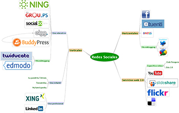
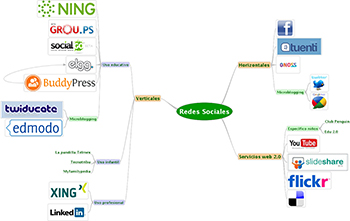

Diccionario
Infografía



 Las páginas web se crean utilizando el lenguaje HTML. Pero, ¿qué herramientas vamos a utilizar?
Las páginas web se crean utilizando el lenguaje HTML. Pero, ¿qué herramientas vamos a utilizar?
Aunque podemos utilizar un simple documento de texto para escribir HTML, es preferible utilizar algún editor que nos ayude a realizar esta tarea.
En nuestro caso, vamos a utilizar el editor de código Bluefish.
En esta página os voy a enseñar todo lo necesario, para poder utilizar esta aplicación.
El editor Bluefish será una herramienta muy importante en el desarrollo de vuestro trabajo final. Es fundamental conocerla, para poder aprovechar todas sus características.
En la siguiente imagen interactiva se explica, las opciones más importantes, aquellas vais a necesitar para desarrollar vuestro trabajo.
El contenido se ha organizado en los siguientes apartados:
En esta actividad vas a trabajar de forma individual.
En la parte inferior de la siguiente imagen están los nombres, en color rojo, de los diferentes elementos del editor. Pincha y déjalo caer en su zona correspondiente.
Si no te sale bien a la primera, vuelve a intentarlo.
Si no recuerdas dónde van estos elementos, te recomiendo que veas el apartado anterior 4. Conoce el editor Bluefish.
Esta actividad debéis de hacerla en parejas.
Antes de empezar debéis acceder al editor Bluefish. Recordad que lo debéis tener instalado en vuestro ordenador, de no ser así comentárselo a vuestro profesor o profesora.
Como estamos trabajando en parejas, yo tendría en un ordenador abierto el apartado 1. Conoce el editor Bluefish de esta página, para ir viendo las diferentes opciones del editor. En otro ordenador tendría abierta la aplicación Bluefish para ir haciendo las actividades que me piden.
Ahora, vais a realizar las siguientes actividades:
¿Qué ha ocurrido?, en el navegador solo se ve 1.
Claro, nosotros hemos incluido las etiquetas, pero nada de contenido.
No os preocupéis, esta actividad era para repasar nuestro editor. Del contenido, nos ocuparemos en las próximas páginas.
En esta actividad vuestro grupo debe hacer una infografía que muestre información sobre la aplicación Bluefish.
Podéis utilizar la información recopilada en la actividad anterior.
Los pasos a seguir para elaborar una infografía, pueden ser:
Dentro de nuestra guía para la competencia digital encontrarás información sobre la infografía.
Si necesitas un ejemplo que te sirva de inspiración, quizás te pueda ayudar la siguiente infografía:
Puedes ver el recurso haciendo clic aquí.
Obra publicada con Licencia Creative Commons Reconocimiento No comercial Compartir igual 4.0